Summary
This experiment investigates hillside erosion control. Box-Behnken design to minimize soil loss and maximize vegetation establishment by tuning mulch depth, seed mix density, and terracing interval.
The design varies 3 factors: mulch cm (cm), ranging from 2 to 10, seed g m2 (g/m2), ranging from 10 to 50, and terrace m (m), ranging from 5 to 20. The goal is to optimize 2 responses: soil loss t ha (t/ha/yr) (minimize) and vegetation pct (%) (maximize). Fixed conditions held constant across all runs include slope pct = 30, soil type = silt_loam.
A Box-Behnken design was chosen because it efficiently fits quadratic models with 3 continuous factors while avoiding extreme corner combinations — requiring only 15 runs instead of the 8 needed for a full factorial at two levels.
Quadratic response surface models were fitted to capture potential curvature and factor interactions. The RSM contour plots below visualize how pairs of factors jointly affect each response.
Key Findings
For soil loss t ha, the most influential factors were terrace m (61.0%), seed g m2 (21.9%), mulch cm (17.1%). The best observed value was 7.6 (at mulch cm = 6, seed g m2 = 30, terrace m = 12.5).
For vegetation pct, the most influential factors were terrace m (50.1%), mulch cm (25.1%), seed g m2 (24.8%). The best observed value was 75.0 (at mulch cm = 2, seed g m2 = 30, terrace m = 20).
Recommended Next Steps
- Run confirmation experiments at the predicted optimal settings to validate the model.
- Consider whether any fixed factors should be varied in a future study.
Experimental Setup
Factors
| Factor | Low | High | Unit |
|---|
mulch_cm | 2 | 10 | cm |
seed_g_m2 | 10 | 50 | g/m2 |
terrace_m | 5 | 20 | m |
Fixed: slope_pct = 30, soil_type = silt_loam
Responses
| Response | Direction | Unit |
|---|
soil_loss_t_ha | ↓ minimize | t/ha/yr |
vegetation_pct | ↑ maximize | % |
Configuration
{
"metadata": {
"name": "Hillside Erosion Control",
"description": "Box-Behnken design to minimize soil loss and maximize vegetation establishment by tuning mulch depth, seed mix density, and terracing interval"
},
"factors": [
{
"name": "mulch_cm",
"levels": [
"2",
"10"
],
"type": "continuous",
"unit": "cm"
},
{
"name": "seed_g_m2",
"levels": [
"10",
"50"
],
"type": "continuous",
"unit": "g/m2"
},
{
"name": "terrace_m",
"levels": [
"5",
"20"
],
"type": "continuous",
"unit": "m"
}
],
"fixed_factors": {
"slope_pct": "30",
"soil_type": "silt_loam"
},
"responses": [
{
"name": "soil_loss_t_ha",
"optimize": "minimize",
"unit": "t/ha/yr"
},
{
"name": "vegetation_pct",
"optimize": "maximize",
"unit": "%"
}
],
"settings": {
"operation": "box_behnken",
"test_script": "use_cases/233_erosion_control/sim.sh"
}
}
Experimental Matrix
The Box-Behnken Design produces 15 runs. Each row is one experiment with specific factor settings.
| Run | mulch_cm | seed_g_m2 | terrace_m |
|---|
| 1 | 6 | 10 | 5 |
| 2 | 6 | 30 | 12.5 |
| 3 | 10 | 30 | 20 |
| 4 | 10 | 30 | 5 |
| 5 | 6 | 30 | 12.5 |
| 6 | 6 | 30 | 12.5 |
| 7 | 2 | 30 | 20 |
| 8 | 10 | 10 | 12.5 |
| 9 | 6 | 10 | 20 |
| 10 | 10 | 50 | 12.5 |
| 11 | 2 | 30 | 5 |
| 12 | 6 | 50 | 20 |
| 13 | 2 | 10 | 12.5 |
| 14 | 2 | 50 | 12.5 |
| 15 | 6 | 50 | 5 |
Step-by-Step Workflow
1
Preview the design
$ doe info --config use_cases/233_erosion_control/config.json
2
Generate the runner script
$ doe generate --config use_cases/233_erosion_control/config.json \
--output use_cases/233_erosion_control/results/run.sh --seed 42
3
Execute the experiments
$ bash use_cases/233_erosion_control/results/run.sh
4
Analyze results
$ doe analyze --config use_cases/233_erosion_control/config.json
5
Get optimization recommendations
$ doe optimize --config use_cases/233_erosion_control/config.json
6
Multi-objective optimization
With 2 competing responses, use --multi to find the best compromise via Derringer–Suich desirability.
$ doe optimize --config use_cases/233_erosion_control/config.json --multi
7
Generate the HTML report
$ doe report --config use_cases/233_erosion_control/config.json \
--output use_cases/233_erosion_control/results/report.html
Features Exercised
| Feature | Value |
|---|
| Design type | box_behnken |
| Factor types | continuous (all 3) |
| Arg style | double-dash |
| Responses | 2 (soil_loss_t_ha ↓, vegetation_pct ↑) |
| Total runs | 15 |
Analysis Results
Generated from actual experiment runs using the DOE Helper Tool.
Response: soil_loss_t_ha
Top factors: terrace_m (61.0%), seed_g_m2 (21.9%), mulch_cm (17.1%).
ANOVA
| Source | DF | SS | MS | F | p-value |
|---|
| Source | DF | SS | MS | F | p-value |
| mulch_cm | 2 | 8.5150 | 4.2575 | 0.885 | 0.4495 |
| seed_g_m2 | 2 | 21.1258 | 10.5629 | 2.196 | 0.1737 |
| terrace_m | 2 | 130.5772 | 65.2886 | 13.574 | 0.0027 |
| Lack | of | Fit | 6 | 86.2913 | 14.3819 |
| Pure | Error | 2 | 9.6200 | | |
| Error | 8 | 95.9113 | 4.8100 | | |
| Total | 14 | 256.1293 | 18.2950 | | |
Pareto Chart
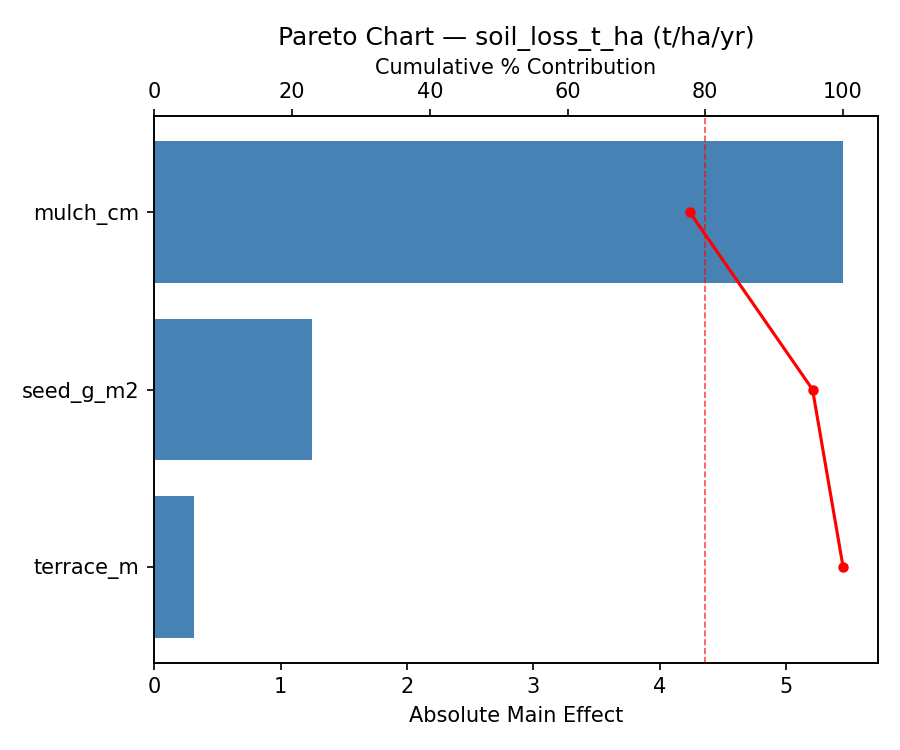
Main Effects Plot
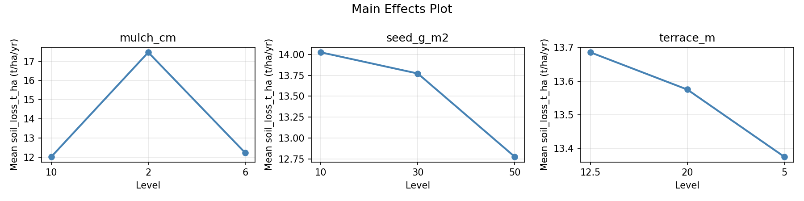
Normal Probability Plot of Effects
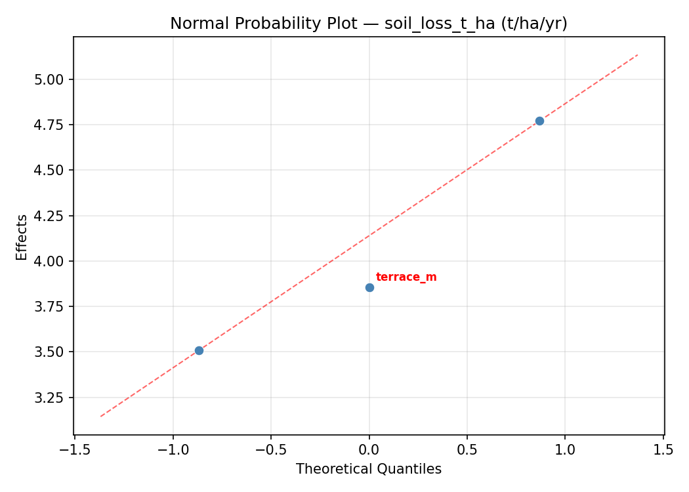
Half-Normal Plot of Effects
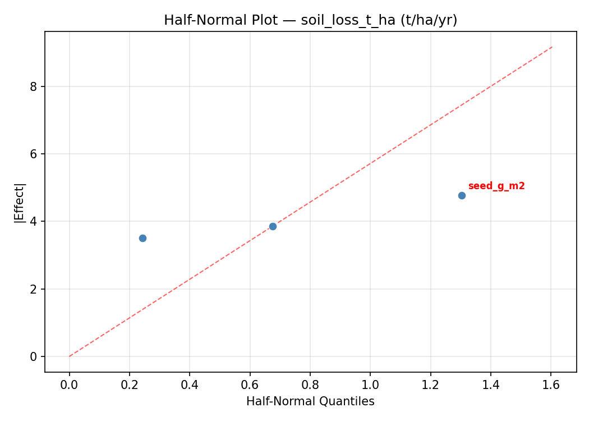
Model Diagnostics
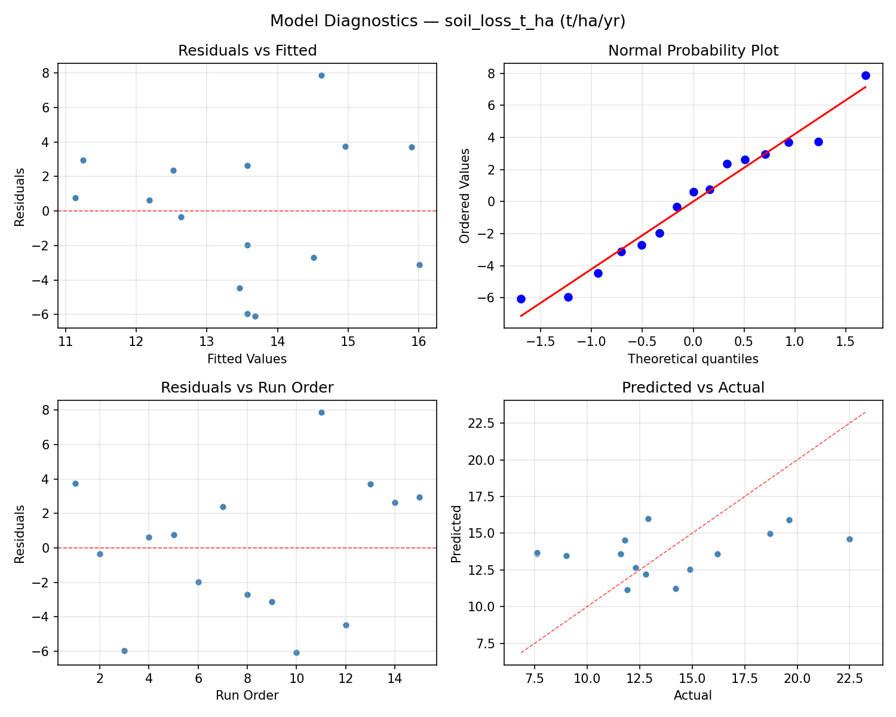
Response: vegetation_pct
Top factors: terrace_m (50.1%), mulch_cm (25.1%), seed_g_m2 (24.8%).
ANOVA
| Source | DF | SS | MS | F | p-value |
|---|
| Source | DF | SS | MS | F | p-value |
| mulch_cm | 2 | 157.3048 | 78.6524 | 18.151 | 0.0011 |
| seed_g_m2 | 2 | 163.3762 | 81.6881 | 18.851 | 0.0009 |
| terrace_m | 2 | 603.3762 | 301.6881 | 69.620 | 0.0000 |
| Lack | of | Fit | 6 | 2267.0095 | 377.8349 |
| Pure | Error | 2 | 8.6667 | | |
| Error | 8 | 2275.6762 | 4.3333 | | |
| Total | 14 | 3199.7333 | 228.5524 | | |
Pareto Chart

Main Effects Plot
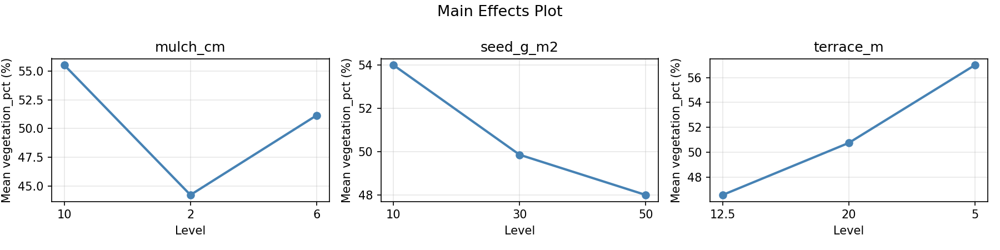
Normal Probability Plot of Effects
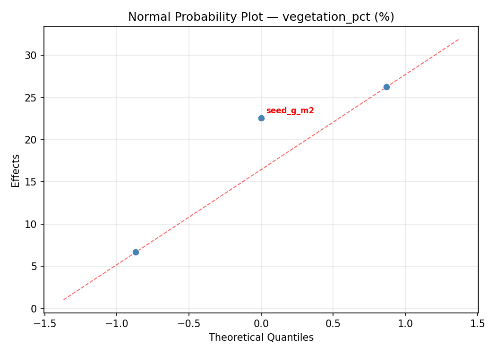
Half-Normal Plot of Effects
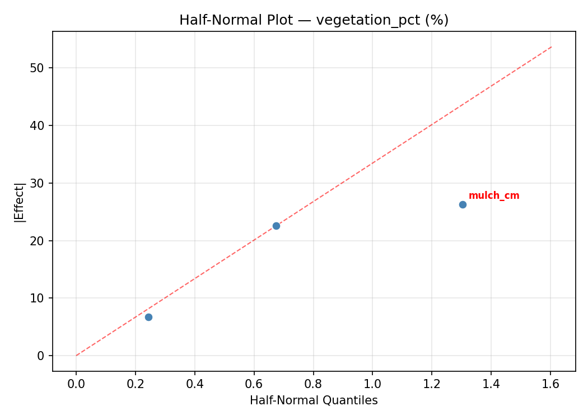
Model Diagnostics
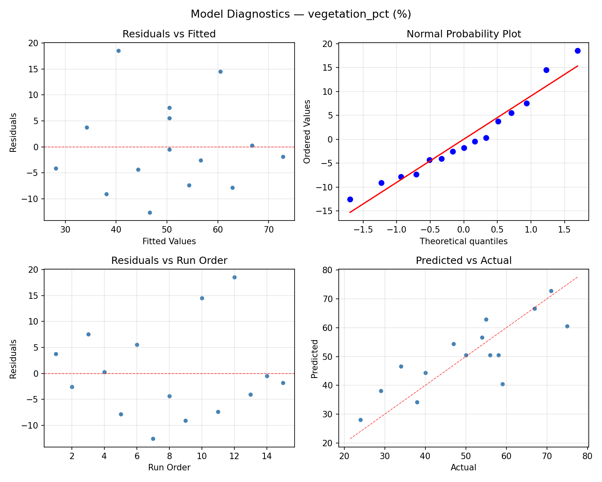
Response Surface Plots
3D surfaces fitted with quadratic RSM. Red dots are observed data points.
soil loss t ha mulch cm vs seed g m2
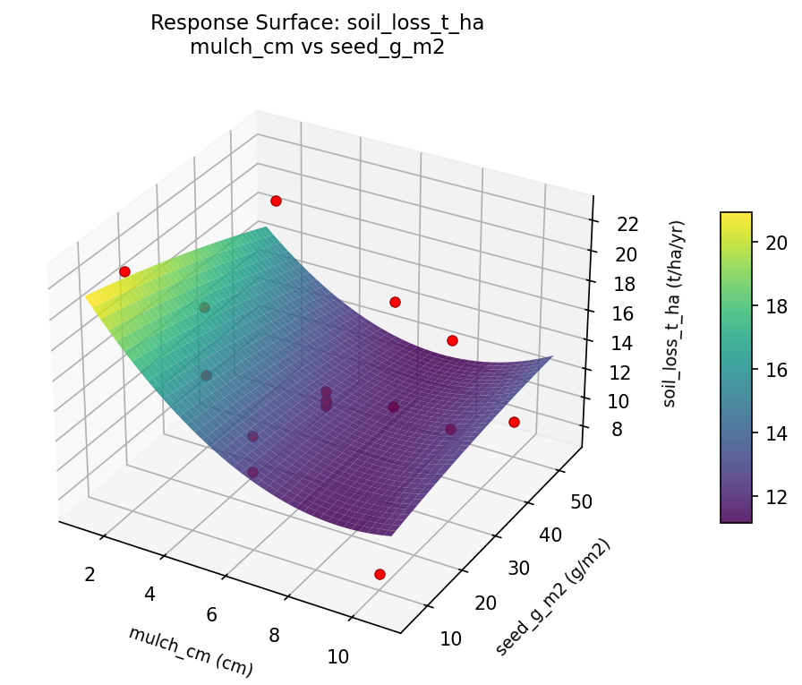
soil loss t ha mulch cm vs terrace m
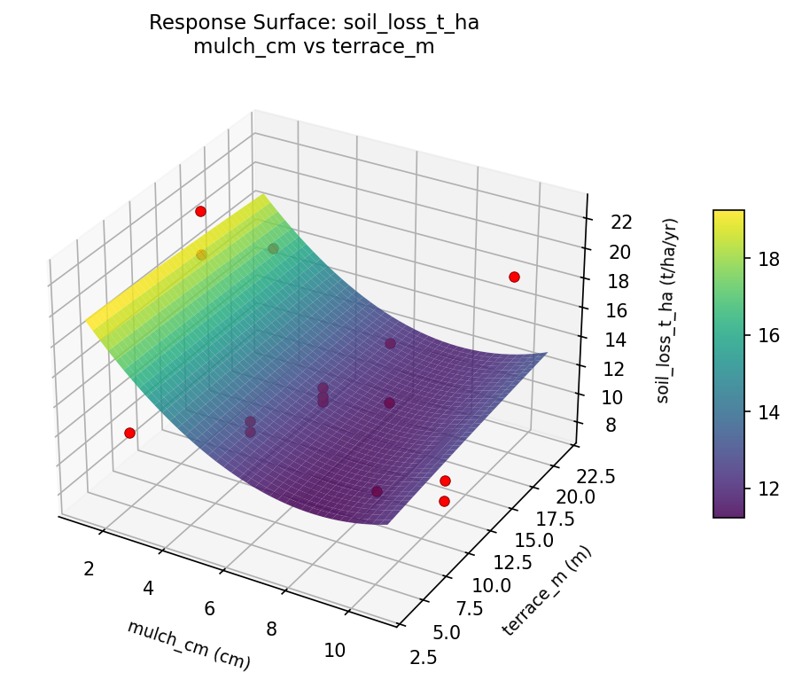
soil loss t ha seed g m2 vs terrace m

vegetation pct mulch cm vs seed g m2
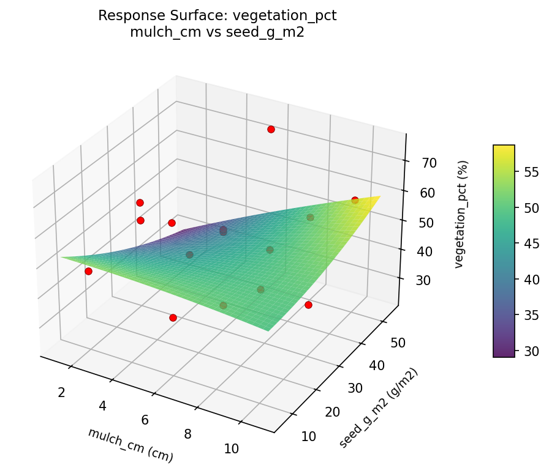
vegetation pct mulch cm vs terrace m
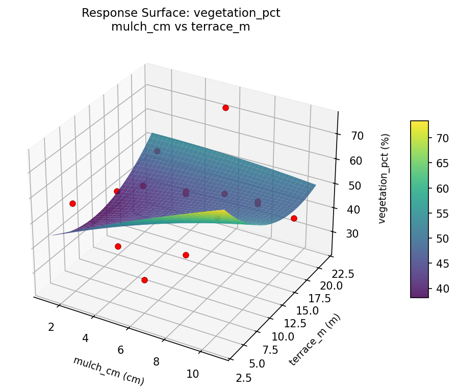
vegetation pct seed g m2 vs terrace m
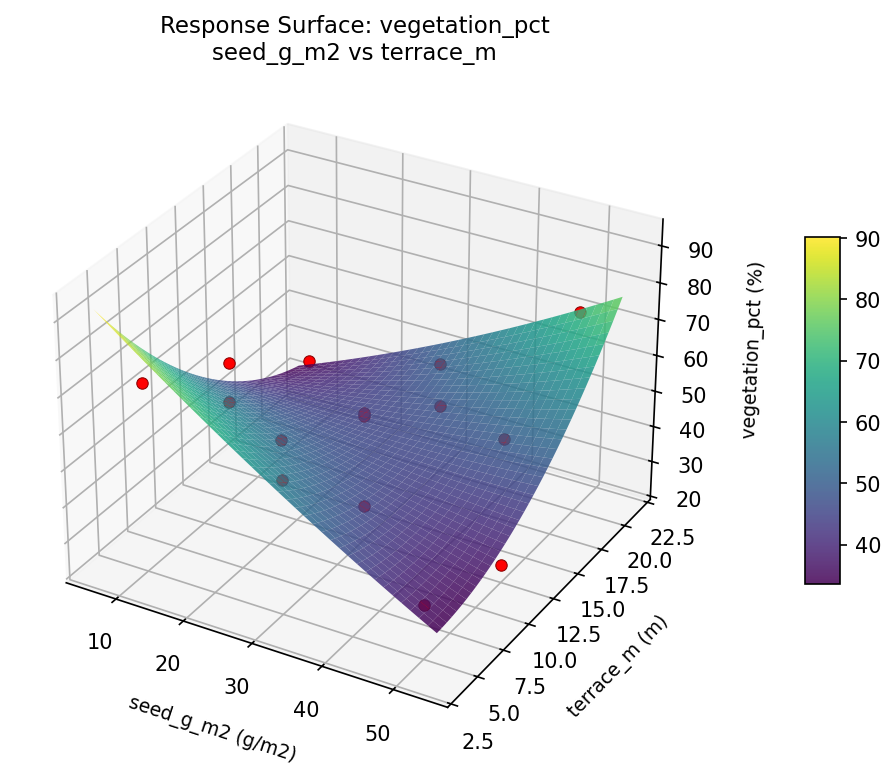
Multi-Objective Optimization
When responses compete, Derringer–Suich desirability finds the best compromise.
Each response is scaled to a 0–1 desirability, then combined via a weighted geometric mean.
Overall Desirability
D = 0.9545
Per-Response Desirability
| Response | Weight | Desirability | Predicted | Dir |
|---|
soil_loss_t_ha |
1.0 |
|
7.60 0.9545 7.60 t/ha/yr |
↓ |
vegetation_pct |
1.5 |
|
75.00 0.9545 75.00 % |
↑ |
Recommended Settings
| Factor | Value |
|---|
mulch_cm | 2 cm |
seed_g_m2 | 30 g/m2 |
terrace_m | 5 m |
Source: from observed run #10
Trade-off Summary
Sacrifice = how much worse than single-objective best.
| Response | Predicted | Best Observed | Sacrifice |
|---|
vegetation_pct | 75.00 | 75.00 | +0.00 |
Top 3 Runs by Desirability
| Run | D | Factor Settings |
|---|
| #3 | 0.7591 | mulch_cm=10, seed_g_m2=50, terrace_m=12.5 |
| #12 | 0.7431 | mulch_cm=6, seed_g_m2=30, terrace_m=12.5 |
Model Quality
| Response | R² | Type |
|---|
vegetation_pct | 0.2926 | linear |
Full Multi-Objective Output
============================================================
MULTI-OBJECTIVE OPTIMIZATION
Method: Derringer-Suich Desirability Function
============================================================
Overall desirability: D = 0.9545
Response Weight Desirability Predicted Direction
---------------------------------------------------------------------
soil_loss_t_ha 1.0 0.9545 7.60 t/ha/yr ↓
vegetation_pct 1.5 0.9545 75.00 % ↑
Recommended settings:
mulch_cm = 2 cm
seed_g_m2 = 30 g/m2
terrace_m = 5 m
(from observed run #10)
Trade-off summary:
soil_loss_t_ha: 7.60 (best observed: 7.60, sacrifice: +0.00)
vegetation_pct: 75.00 (best observed: 75.00, sacrifice: +0.00)
Model quality:
soil_loss_t_ha: R² = 0.1073 (linear)
vegetation_pct: R² = 0.2926 (linear)
Top 3 observed runs by overall desirability:
1. Run #10 (D=0.9545): mulch_cm=2, seed_g_m2=30, terrace_m=5
2. Run #3 (D=0.7591): mulch_cm=10, seed_g_m2=50, terrace_m=12.5
3. Run #12 (D=0.7431): mulch_cm=6, seed_g_m2=30, terrace_m=12.5
Full Analysis Output
=== Main Effects: soil_loss_t_ha ===
Factor Effect Std Error % Contribution
--------------------------------------------------------------
terrace_m 7.1321 1.1044 61.0%
seed_g_m2 2.5607 1.1044 21.9%
mulch_cm 2.0000 1.1044 17.1%
=== ANOVA Table: soil_loss_t_ha ===
Source DF SS MS F p-value
-----------------------------------------------------------------------------
mulch_cm 2 8.5150 4.2575 0.885 0.4495
seed_g_m2 2 21.1258 10.5629 2.196 0.1737
terrace_m 2 130.5772 65.2886 13.574 0.0027
Lack of Fit 6 86.2913 14.3819 2.990 0.2717
Pure Error 2 9.6200 4.8100
Error 8 95.9113 4.8100
Total 14 256.1293 18.2950
=== Summary Statistics: soil_loss_t_ha ===
mulch_cm:
Level N Mean Std Min Max
------------------------------------------------------------
10 4 12.4000 0.5944 11.6000 12.9000
2 4 14.4000 5.0517 7.6000 19.6000
6 7 13.7714 5.3228 7.6000 22.5000
seed_g_m2:
Level N Mean Std Min Max
------------------------------------------------------------
10 4 14.8750 3.1700 11.8000 18.7000
30 7 12.3143 3.8843 7.6000 19.6000
50 4 14.4750 6.1733 7.6000 22.5000
terrace_m:
Level N Mean Std Min Max
------------------------------------------------------------
12.5 7 11.1429 3.2062 7.6000 16.2000
20 4 13.1250 1.6721 11.6000 14.9000
5 4 18.2750 4.3007 12.3000 22.5000
=== Main Effects: vegetation_pct ===
Factor Effect Std Error % Contribution
--------------------------------------------------------------
terrace_m 15.3929 3.9034 50.1%
mulch_cm 7.7143 3.9034 25.1%
seed_g_m2 7.6071 3.9034 24.8%
=== ANOVA Table: vegetation_pct ===
Source DF SS MS F p-value
-----------------------------------------------------------------------------
mulch_cm 2 157.3048 78.6524 18.151 0.0011
seed_g_m2 2 163.3762 81.6881 18.851 0.0009
terrace_m 2 603.3762 301.6881 69.620 0.0000
Lack of Fit 6 2267.0095 377.8349 87.193 0.0114
Pure Error 2 8.6667 4.3333
Error 8 2275.6762 4.3333
Total 14 3199.7333 228.5524
=== Summary Statistics: vegetation_pct ===
mulch_cm:
Level N Mean Std Min Max
------------------------------------------------------------
10 4 51.5000 16.0520 29.0000 67.0000
2 4 55.0000 23.3952 24.0000 75.0000
6 7 47.2857 10.2260 34.0000 59.0000
seed_g_m2:
Level N Mean Std Min Max
------------------------------------------------------------
10 4 48.7500 13.2508 38.0000 67.0000
30 7 53.8571 14.3461 24.0000 71.0000
50 4 46.2500 20.6135 29.0000 75.0000
terrace_m:
Level N Mean Std Min Max
------------------------------------------------------------
12.5 7 56.1429 14.4963 29.0000 75.0000
20 4 50.2500 16.6608 34.0000 71.0000
5 4 40.7500 12.9454 24.0000 54.0000
Optimization Recommendations
=== Optimization: soil_loss_t_ha ===
Direction: minimize
Best observed run: #3
mulch_cm = 6
seed_g_m2 = 30
terrace_m = 12.5
Value: 7.6
RSM Model (linear, R² = 0.3540, Adj R² = 0.1778):
Coefficients:
intercept +13.5733
mulch_cm +1.2875
seed_g_m2 +1.5875
terrace_m -2.6750
RSM Model (quadratic, R² = 0.8405, Adj R² = 0.5534):
Coefficients:
intercept +11.2333
mulch_cm +1.2875
seed_g_m2 +1.5875
terrace_m -2.6750
mulch_cm*seed_g_m2 +1.0250
mulch_cm*terrace_m +0.7500
seed_g_m2*terrace_m +2.7500
mulch_cm^2 -0.9792
seed_g_m2^2 +4.6708
terrace_m^2 +0.6958
Curvature analysis:
seed_g_m2 coef=+4.6708 convex (has a minimum)
mulch_cm coef=-0.9792 concave (has a maximum)
terrace_m coef=+0.6958 convex (has a minimum)
Notable interactions:
seed_g_m2*terrace_m coef=+2.7500 (synergistic)
mulch_cm*seed_g_m2 coef=+1.0250 (synergistic)
mulch_cm*terrace_m coef=+0.7500 (synergistic)
Predicted optimum (from quadratic model, at observed points):
mulch_cm = 6
seed_g_m2 = 10
terrace_m = 5
Predicted value: 20.4375
Surface optimum (via L-BFGS-B, quadratic model):
mulch_cm = 2
seed_g_m2 = 22.9081
terrace_m = 20
Predicted value: 5.6502
Model quality: Good fit — general trends are captured, some noise remains.
Factor importance:
1. seed_g_m2 (effect: 6.3, contribution: 44.0%)
2. terrace_m (effect: 5.3, contribution: 37.5%)
3. mulch_cm (effect: 2.6, contribution: 18.6%)
=== Optimization: vegetation_pct ===
Direction: maximize
Best observed run: #10
mulch_cm = 2
seed_g_m2 = 30
terrace_m = 20
Value: 75.0
RSM Model (linear, R² = 0.1907, Adj R² = -0.0300):
Coefficients:
intercept +50.4667
mulch_cm -3.3750
seed_g_m2 -5.3750
terrace_m +6.0000
RSM Model (quadratic, R² = 0.8806, Adj R² = 0.6658):
Coefficients:
intercept +61.3333
mulch_cm -3.3750
seed_g_m2 -5.3750
terrace_m +6.0000
mulch_cm*seed_g_m2 +3.7500
mulch_cm*terrace_m -11.5000
seed_g_m2*terrace_m +0.0000
mulch_cm^2 -7.5417
seed_g_m2^2 -18.5417
terrace_m^2 +5.7083
Curvature analysis:
seed_g_m2 coef=-18.5417 concave (has a maximum)
mulch_cm coef=-7.5417 concave (has a maximum)
terrace_m coef=+5.7083 convex (has a minimum)
Notable interactions:
mulch_cm*terrace_m coef=-11.5000 (antagonistic)
mulch_cm*seed_g_m2 coef=+3.7500 (synergistic)
Predicted optimum (from quadratic model, at observed points):
mulch_cm = 2
seed_g_m2 = 30
terrace_m = 20
Predicted value: 80.3750
Surface optimum (via L-BFGS-B, quadratic model):
mulch_cm = 2
seed_g_m2 = 25.0787
terrace_m = 20
Predicted value: 81.4977
Model quality: Good fit — general trends are captured, some noise remains.
Factor importance:
1. seed_g_m2 (effect: 23.8, contribution: 50.2%)
2. terrace_m (effect: 13.6, contribution: 28.7%)
3. mulch_cm (effect: 10.0, contribution: 21.1%)